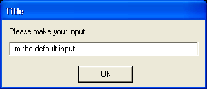

InputRequester()
Syntax
Text$ = InputRequester(Title$, Message$, DefaultText$ [, Flags])Description
Opens a blocking input requester to enter some text.
Parameters
Title$ Title of the requester. Message$ Message displayed before the input field. DefaultText$ Default text in the input field. Flags (optional) Can be the following value: #PB_InputRequester_Password: set the field type as 'password'. The displayed text will be hidden.
Return value
Returns the text in the input field, or an empty string if the requester has been closed without hitting the "OK" button.
Example
Input$ = InputRequester("Title", "Please make your input:", "I'm the default input.") If Input$ > "" a$ = "You entered in the requester:" + Chr(10) ; Chr(10) only needed a$ + Input$ ; for line-feed Else a$ = "The requester was canceled or there was nothing entered." EndIf MessageRequester("Information", a$, 0)

Supported OS
All